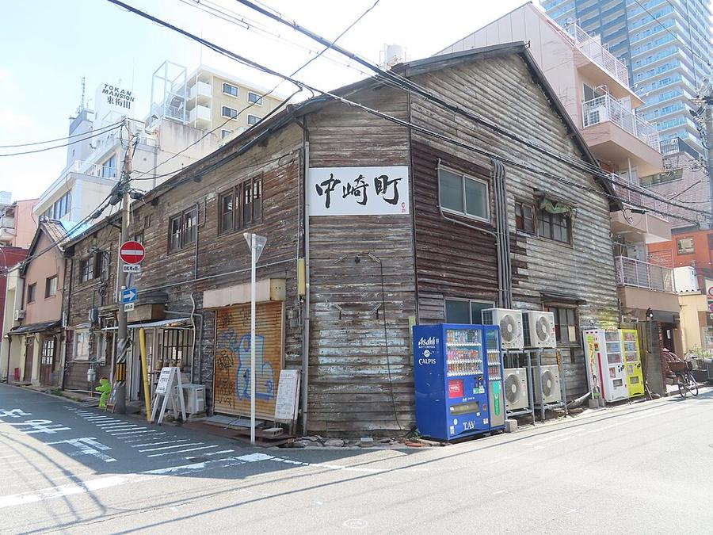
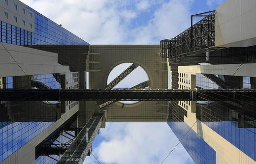

3Nakazakicho
中崎町 · У отеля · Umeda и Kita



Квартал узких улочек к востоку от станции Umeda. Здесь сохранились деревянные дома и длинные дома на несколько семей старой Осаки, многие переделаны в маленькие кафе, винтажные лавки и мастерские.
Это не место с билетом, а прогулка по жилой Осаке рядом с отелем. Под открытым небом - на время без дождя. Часы кафе у каждого свои, я их не проверял.
| Часы | улицы всегда; кафе - у каждого свои |
|---|---|
| Вход | бесплатно |
| На месте | 40-60 мин |
| Дождь | 🌳 под открытым небом, лучше без дождя |
Источник часов и цен: часы кафе не проверял
Как добраться от отеля
- От отеля пешком ~12 мин на восток, или метро Tanimachi (фиолетовая) от Higashi-Umeda 1 остановка до Nakazakicho.
Рядом

4. Tenjinbashisuji и Osaka TenmanguСамая длинная крытая улица Японии и святилище 949 года

1. Umeda Sky BuildingОткрытая крыша на 173 м, закат 24.10 в 17:13
Фото: Wikimedia Commons, автор и лицензия под каждым. Поезда: Yahoo!乗換案内 на 24-26.10.2026, пешие отрезки: OSRM. Часы и цены проверены 24.10.2026 13:50 JST. ← ко всем местам